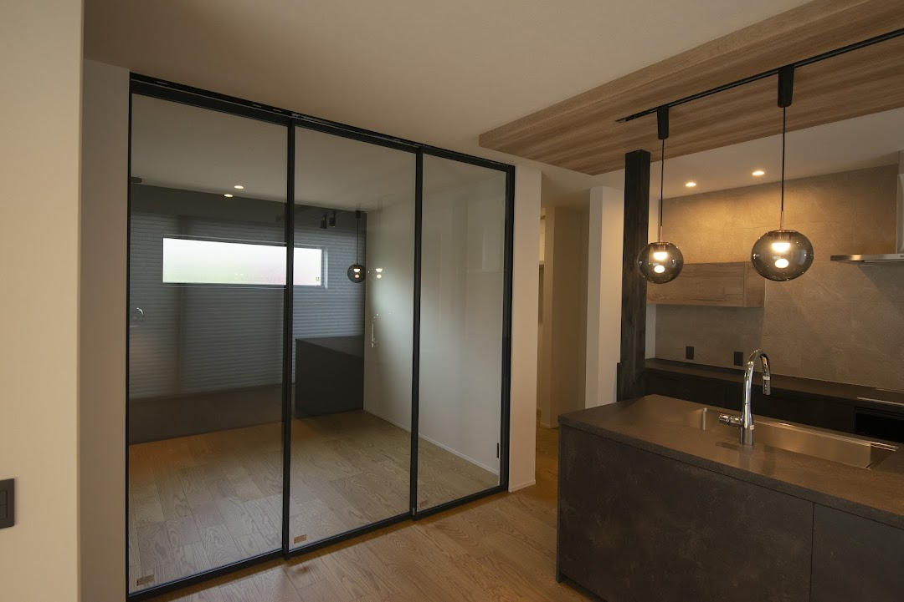

ここ数年、ご相談に来られる方の中で確実に増えているのが、「職場は大阪のまま。家は奈良に建てたい」というご家族です。今のお住まいは大阪や京都。でも今の家賃で買える広さ、子どもを育てる環境を考えたときに、奈良が候補に挙がってくる。今日はその選択を、奈良の工務店として——いいことも、注意してほしいことも——正直に整理します。
通勤時間の目安。「意外と近い」が実感です
まず一番の心配ごと、通勤から。代表的な経路の目安です（乗り換えなし・日中の所要時間の目安。時間帯で変わります）。
| 出発 | 行き先 | 目安 |
|---|---|---|
| 学園前（近鉄） | 大阪難波 | 約30分（快速急行） |
| 近鉄奈良 | 大阪難波 | 約40分（快速急行） |
| 生駒 | 本町方面 | 約25分（けいはんな線→中央線 直通） |
| 王寺（JR） | 天王寺 | 約20分（大和路快速） |
| 近鉄奈良 | 京都 | 約35〜45分（特急／急行） |
大阪市内で端から端へ通勤するのと、そう変わらない数字だと思いませんか。「奈良に住む＝遠距離通勤」ではありません。沿線と駅を選べば、通勤時間はほぼ変えずに、住まいの条件だけを変えられます。
正直な注意点。①終電の時刻と帰りの本数はエリアで差があります。残業が多い方は「行き」ではなく「帰りの時刻表」を必ず見てください。②駅まで徒歩かバスか車かで、毎日の負担がまったく違います。③通勤定期代は会社支給の上限も確認を。このあたりは土地を決める前に一度、実際の勤務時間でシミュレーションするのが確実です。
同じ予算で、家と土地の「余白」が変わります
次にお金の話。大阪市内や北摂の土地の相場と比べると、奈良は同じ予算で確保できる広さが大きく変わります。エリアにもよるので断定的な数字は書きませんが、ご相談の場でよくあるのは、こういう変化です。

奈良の坪単価の相場観は別の記事で詳しく書いています。土地の値段はエリアでまったく違うので、「うちの通勤条件だとどのエリアが候補になるか」から一緒に考えるのが早道です。
子育ての環境で選ぶ人が、実際いちばん多い
通勤とお金の計算で候補に挙がった奈良を、最後に決め手にするのはだいたい子育ての環境です。校区を選んで土地を探すご家族、「子どもが走り回れる庭」を最優先にするご家族。実例のお客様の声でも、「子供が走っても怒らなくていい」という言葉が何度も出てきます。
医療費の助成や子育て支援の制度は市町村ごとに中身が違います。ここは「どの市に住むか」で差が出るところなので、土地の候補が絞れてきた段階で、最新の制度を一緒に確認しましょう。

移住の支援制度もあります
奈良市には東京圏からの移住者向けの支援金制度があるなど、「移り住む人」向けの制度が自治体ごとにあります。家づくりの補助金（2026年の住宅補助金の記事）と合わせると、計画の立て方で受け取れる額が変わります。年度で条件が変わるので、動き出しの段階で最新を確認するのが鉄則です。
よくあるご質問
今は大阪在住です。土地探しから相談できますか？
できます。というより、通勤条件を先に教えていただくのが一番の近道です。「◯◯駅まで◯分以内・徒歩で駅まで行きたい」が決まれば、候補エリアは自然に絞れます。週末に大阪から来店いただくご家族は珍しくありません。オンラインでの打ち合わせも対応しています。
奈良のどのあたりが大阪通勤に向いていますか？
大阪のどこへ通うかで変わります。難波・本町方面なら近鉄奈良線・けいはんな線の沿線、天王寺方面ならJR大和路線の沿線が候補になりやすいです。同じ市内でも駅からの距離で毎日の負担が変わるので、地名ではなく「駅と時間帯」で考えることをおすすめします。
京都への通勤でも奈良はアリですか？
アリです。近鉄京都線で京都駅まで直通があり、奈良市北部や木津川沿いのエリアは京都通勤圏として選ばれています。大阪ほど本数は多くないので、こちらも「帰りの時刻表」を先に確認してください。

奈良の工務店シバ・サンホームで、初めての家づくりに伴走しています。大阪から移り住むご家族の土地探しも多数。モットーはスピード・誠実さ・楽しさ。